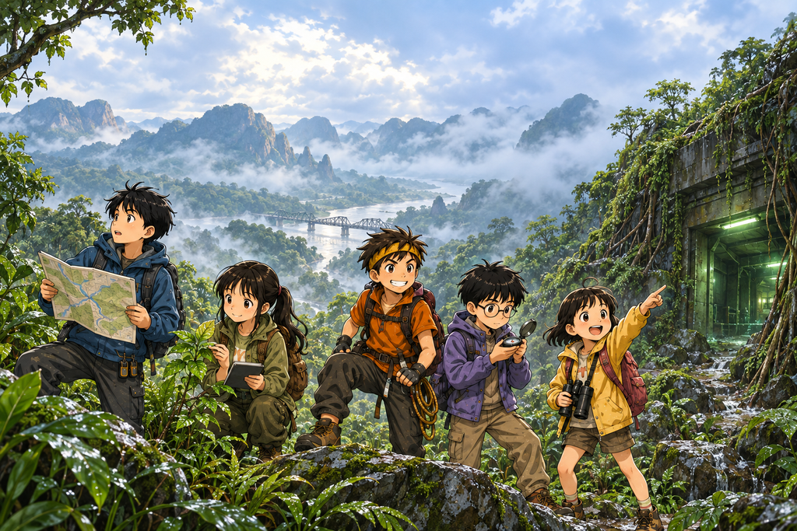

ทีมสำรวจ ZERO
เด็กห้าคน ค่ายวิทยาศาสตร์หนึ่งแห่ง และสถานีที่ไม่ควรมีอยู่บนแผนที่
พวกเขาไม่มีอาวุธ ไม่มีพลังวิเศษ มีแค่แผนที่ เข็มทิศ นกหวีด และสิ่งที่สังเกตเห็นด้วยตาตัวเอง
อ่านตอนที่ 1รู้จักทีม

นนท์ มีนา ต้นกล้า ปั้น และฟ้า ไม่มีใครเก่งทุกอย่าง และทุกปัญหาสำคัญต้องใช้หลายคนช่วยกัน
อากาศกำลังหมด
ไม่มีกลิ่น ไม่มีเสียงเตือน มีแค่อาการปวดหัว กับคนที่ไม่เคยนับผิดเริ่มนับผิด
อ่านตอนที่ 8ในที่สุด...พวกเธอก็มาถึง
จอที่เงียบมายี่สิบปีพิมพ์ข้อความออกมา แต่คำถามที่สำคัญกว่าคือเครื่องที่ไม่มีตา มองเห็นอะไรของพวกเขากันแน่
อ่านตอนที่ 7ห้องที่ยังมีไฟ
สถานีร้างมานาน แต่ไฟฉุกเฉินยังทำงาน และมีบางอย่างกำลังชาร์จแบตเตอรี่จากใต้พื้นดิน
อ่านตอนที่ 6ZERO-07
หลังตามแรงสั่นมาถึงลาดเขา ทีมพบประตูโลหะที่ไม่มีอยู่ในแผนที่
อ่านตอนที่ 5เสียงใต้ภูเขา
เสียงสะท้อนหลอกหูเราได้ ทีมจึงใช้แรงสั่นสะเทือนกับการทดลองตามหาต้นกำเนิดแทน
อ่านตอนที่ 4น้ำที่ดื่มไม่ได้
น้ำขุ่นอยู่รอบตัว แต่การทำให้น้ำดูใส ยังไม่พอที่จะทำให้มันปลอดภัย
อ่านตอนที่ 3ก่อนฟ้าจะมืด
เมื่อทางกลับยังอันตรายและแสงกำลังหมด เด็กทั้งห้าต้องเลือกที่พักให้ปลอดภัยก่อนค่ำ
อ่านตอนที่ 2วันที่ป่าหายไปจากแผนที่
ฝนที่มาเร็วกว่าคาด น้ำป่าที่ตัดเส้นทาง และป้ายเก่าที่พาเด็กทั้งห้าไปผิดทิศ
เริ่มอ่านช่วยให้การผจญภัยเดินทางต่อ
ถ้า ZERO ทำให้คุณสนุก เลี้ยงกาแฟคนเขียนและช่วยค่าภาพประกอบได้ตามสะดวกครับ
สนับสนุนทีม ZERO